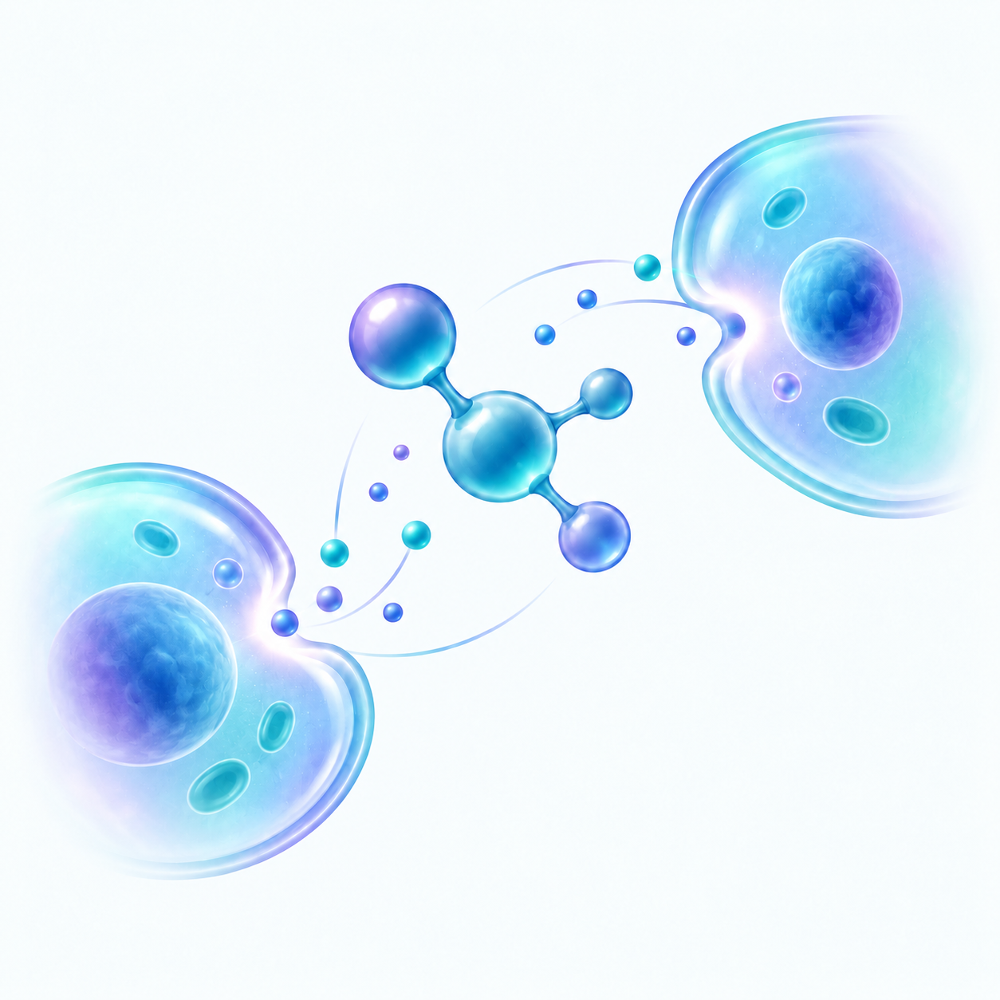
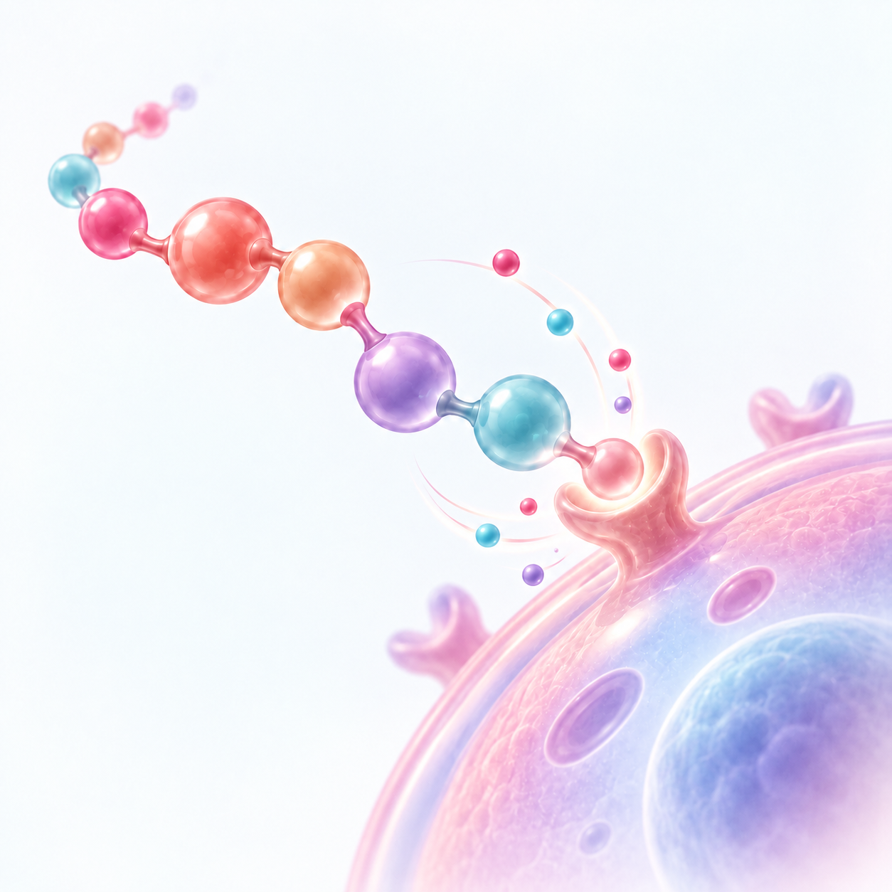

¿Qué significa coadyuvante?
Significa que el tratamiento está diseñado para acompañar y complementar otros abordajes médicos, como parte de una estrategia integral e individualizada.
No todas las personas viven una enfermedad de la misma manera. Por eso seleccionamos diferentes componentes y estrategias de apoyo de acuerdo con las necesidades particulares de cada paciente.
En Grupo Bidao desarrollamos tratamientos coadyuvantes que integran principios de terapia molecular, péptidos, inmunoterapia y medicina regenerativa, para acompañar al organismo y apoyar diferentes funciones biológicas.
Cada tratamiento requiere valoración e indicación profesional.
«Personalizado significa que el tratamiento no se plantea exactamente igual para todos.»
Sabemos que enfrentar una enfermedad puede traer mucha información médica difícil de comprender. Nuestro objetivo es que, antes de iniciar cualquier tratamiento, entiendas:
«No tienes que convertirte en experto en medicina. Nosotros te explicamos cada paso.»
Cuando hablamos de «personalizado», no nos referimos simplemente a cambiar la dosis de un producto. Nos referimos a analizar qué necesita cada paciente y, a partir de esa información, seleccionar una combinación específica de componentes para acompañar determinados sistemas y funciones del organismo.
De acuerdo con el padecimiento y la indicación médica, el tratamiento puede prepararse combinando hasta cinco tejidos diferentes. Para comprender mejor este enfoque, hay dos conceptos clave que forman parte de su planteamiento: coadyuvante e inocuo.
Significa que el tratamiento está diseñado para acompañar y complementar otros abordajes médicos, como parte de una estrategia integral e individualizada.
Se refiere a un enfoque que busca ser bien tolerado y poco agresivo para el organismo. Aun así, su uso siempre debe valorarse de manera individual.
Una forma sencilla de entenderlo
Imagina que tu organismo es una gran red en la que millones de células necesitan comunicarse entre sí. El sistema inmunológico, las hormonas, el metabolismo, el cerebro y los distintos órganos intercambian señales constantemente. La terapia molecular y peptídica trabaja con moléculas que participan en esas señales biológicas, buscando apoyar determinados procesos del organismo. No se trata de ofrecer la misma fórmula a todas las personas, sino de definir qué combinación puede ser más apropiada para cada caso.
«Personalizar no es elegir al azar: es adaptar cada decisión a quien la necesita.»
Dirigido a quienes buscan conocer alternativas complementarias, junto a su equipo médico, para las siguientes condiciones:
Cada organismo responde de manera diferente. Los objetivos, componentes, esquema de aplicación y seguimiento deben determinarse de manera individual.
El Tratamiento Personalizado busca adaptar la estrategia terapéutica a las necesidades de cada paciente, considerando su padecimiento, los sistemas involucrados y los objetivos definidos por su médico.
Por eso puede contemplarse en distintas áreas de la salud. Explora las principales áreas y padecimientos en los que este enfoque puede considerarse como parte de una estrategia personalizada.
La selección del abordaje depende de la valoración médica individual de cada paciente.
«Conocer las áreas es el primer paso; la valoración médica define el camino a seguir.»
Nuestro sistema inmunológico no trabaja de forma aislada. Está formado por células, órganos y moléculas que se comunican constantemente para reconocer amenazas, regular respuestas y mantener el equilibrio del organismo. A su vez, esta red mantiene una relación estrecha con otros sistemas, como el endocrino, el nervioso y los mecanismos naturales de reparación.
Dentro del Tratamiento Personalizado, los tejidos se seleccionan por las funciones biológicas y los componentes con los que están relacionados. Algunos tienen una participación directa en la función inmunológica, mientras que otros se vinculan con la regulación hormonal, la comunicación entre sistemas o los procesos de reparación y regeneración.
Por eso, personalizar no significa utilizar todos los tejidos, sino seleccionar y combinar —hasta cinco— aquellos que resulten más adecuados de acuerdo con el padecimiento y la valoración médica de cada paciente.
«Cada sistema del cuerpo habla su propio lenguaje; el tratamiento busca escucharlos todos.»
Relacionados directamente con células y funciones del sistema inmunológico.
Relacionados con la comunicación neuroendocrina y la regulación de distintas funciones del organismo.
Relacionados con componentes biológicos de interés dentro de procesos de señalización y reparación tisular.
El reloj biológico
Pequeña glándula del cerebro relacionada con la producción de melatonina, la hormona que ayuda al organismo a saber cuándo es momento de estar despierto y cuándo de dormir. También se le asocian procesos antioxidantes.
El director de orquesta hormonal
Glándula situada en la base del cerebro que participa en el control de hormonas relacionadas con el crecimiento, la reproducción, el metabolismo y otros procesos. Uno de los principales directores de nuestra «orquesta hormonal».
El centro de control
Región del cerebro relacionada con funciones fundamentales: hambre, saciedad, temperatura corporal, sueño, respuesta al estrés y regulación hormonal. Uno de los grandes centros de regulación automática del organismo.
La escuela de nuestras defensas
Órgano estrechamente relacionado con el sistema inmunológico: en él maduran los linfocitos T, células fundamentales de nuestras defensas. Un lugar donde ciertas células terminan su «entrenamiento» antes de cumplir su función.
Filtro y centro de vigilancia
Participa en la filtración de la sangre y forma parte del sistema inmunológico: alberga células de defensa y participa en distintas respuestas frente a microorganismos. Filtro y estación de vigilancia a la vez.
Fuente de moléculas activas
Tejido reconocido como fuente de una amplia variedad de péptidos biológicamente activos. Su interés dentro de la terapia molecular se relaciona con la diversidad de componentes presentes en este tejido.
Interés en medicina regenerativa
Tejido de gran interés para la investigación y la medicina regenerativa por la variedad de estructuras y componentes biológicos que contiene. Su uso específico dentro de cada preparación se define caso por caso, según indicación médica.
Un proceso de cinco pasos, en el mismo orden para cada paciente.
Todo comienza con una valoración: conocer tu diagnóstico, tus antecedentes y el tratamiento médico que actualmente recibes.
A partir de tu situación particular se define qué componentes o tejidos serán considerados para la preparación, en combinaciones de hasta cinco tejidos diferentes.
El material biológico se procesa en laboratorio bajo medidas de bioseguridad, en distintas etapas de preparación.
Se entrega en forma de viales liofilizados junto con su diluyente. Liofilizado significa simplemente que la sustancia se presenta en forma seca, para prepararse justo antes de utilizarse.
La frecuencia de aplicación se determina de acuerdo con la indicación de tu médico. No todos los pacientes reciben necesariamente el mismo esquema.
«Un camino con pasos claros, pensado para acompañarte en cada etapa.»
El tratamiento se construye a partir de diferentes tecnologías que trabajan con distintos procesos y funciones del organismo. Algunas se relacionan con la comunicación entre células, otras con la regulación del sistema inmunológico o con los mecanismos naturales de reparación, permitiendo diseñar una estrategia ajustada a cada paciente.

Trabajar con los mensajes de las células
Nuestro organismo funciona gracias a millones de moléculas que transmiten información entre células. La terapia molecular parte de utilizar moléculas biológicamente activas para apoyar determinados procesos celulares: pequeños mensajes que participan en esa comunicación.

Pequeñas moléculas, grandes funciones
Los péptidos son pequeñas cadenas formadas por aminoácidos, las piezas con las que nuestro cuerpo construye proteínas. Según su estructura, pueden participar en distintos procesos de comunicación, regulación o actividad biológica: pequeñas instrucciones que usan las células.
Apoyar la regulación de nuestras defensas
El sistema inmunológico es nuestra red de vigilancia y defensa. La inmunomodulación busca influir en la forma en que funciona esa red, ayudando a regular determinadas respuestas inmunológicas, más que simplemente «subir las defensas».
Apoyar procesos naturales de reparación
Nuestro cuerpo renueva y repara tejidos constantemente. La medicina regenerativa estudia mecanismos relacionados con esos procesos biológicos de reparación y recuperación.
«Distintas tecnologías, un mismo propósito: acompañar a tu organismo.»
«Porque dos personas con el mismo diagnóstico no necesariamente son iguales. Su edad, condición general, antecedentes, tratamientos actuales y necesidades pueden ser diferentes. Por eso comenzamos con una valoración.»
Un tratamiento personalizado comienza antes de preparar cualquier vial.
No. El tratamiento se define de manera individual, considerando el diagnóstico, los antecedentes y las necesidades particulares de cada paciente. Por eso hablamos de un tratamiento personalizado y no de una fórmula única.
No. Es un tratamiento coadyuvante, es decir, un apoyo adicional que se utiliza junto con la atención médica que ya recibes, nunca en su lugar. Cualquier incorporación requiere valoración profesional.
Cada preparación puede combinar hasta cinco tejidos diferentes, seleccionados de acuerdo con el padecimiento y la indicación de tu médico.
Eso se determina durante la valoración inicial, en la que se revisa tu diagnóstico, tus antecedentes y el tratamiento médico que recibes actualmente, para definir qué componentes pueden ser más apropiados para tu caso.
Puede considerarse como un apoyo coadyuvante junto a tu tratamiento oncológico, siempre después de una valoración. No sustituye ni interfiere con la atención indicada por tu oncólogo; se plantea como un complemento.
Su objetivo es actuar como apoyo al tratamiento médico mediante mecanismos relacionados con la regulación celular, el sistema inmunológico, el metabolismo y los procesos regenerativos. El propósito y los resultados esperados pueden variar dependiendo del padecimiento y de las condiciones particulares de cada paciente.
Puede ser complemento de otros tratamientos médicos. Sin embargo, cada caso debe revisarse de manera individual para determinar la combinación y el esquema adecuados.
La preparación puede considerar componentes relacionados con tejidos como glándula pineal, hipófisis, timo, bazo, hipotálamo, placenta y cordón umbilical. Cada uno se selecciona por las funciones biológicas con las que se relaciona y por los objetivos del tratamiento. La página explica con mayor detalle la función de cada uno.
La frecuencia depende de la indicación médica y según las necesidades del paciente. El esquema final se determina después de la valoración.
La respuesta puede variar entre pacientes. Los cambios pueden comenzar a observarse regularmente a partir de la cuarta aplicación y el seguimiento puede apoyarse en análisis serológicos. La evolución debe evaluarse de acuerdo con cada caso.
La forma de determinarlo es mediante una valoración individual. En ella se revisa el padecimiento y las necesidades particulares del paciente para definir si este tipo de tratamiento puede utilizarse como complemento y cuál sería la preparación adecuada.
«Si tu duda no está aquí, la resolvemos juntos en tu valoración.»